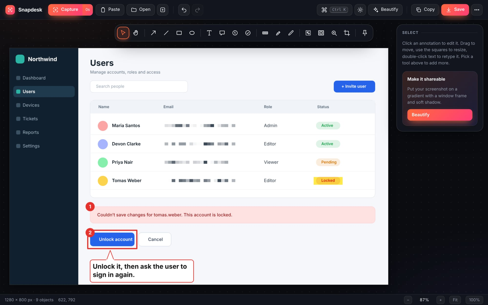
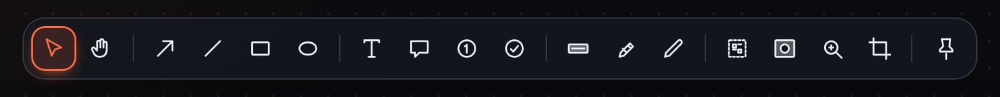
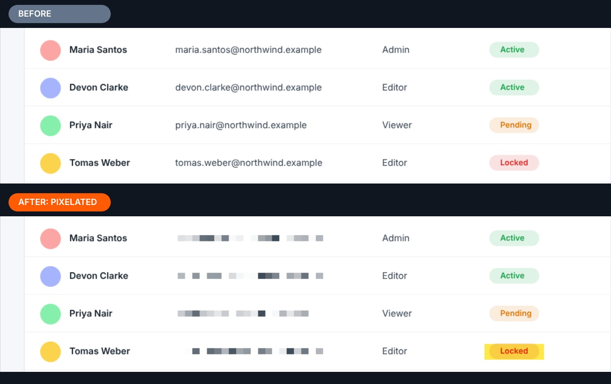
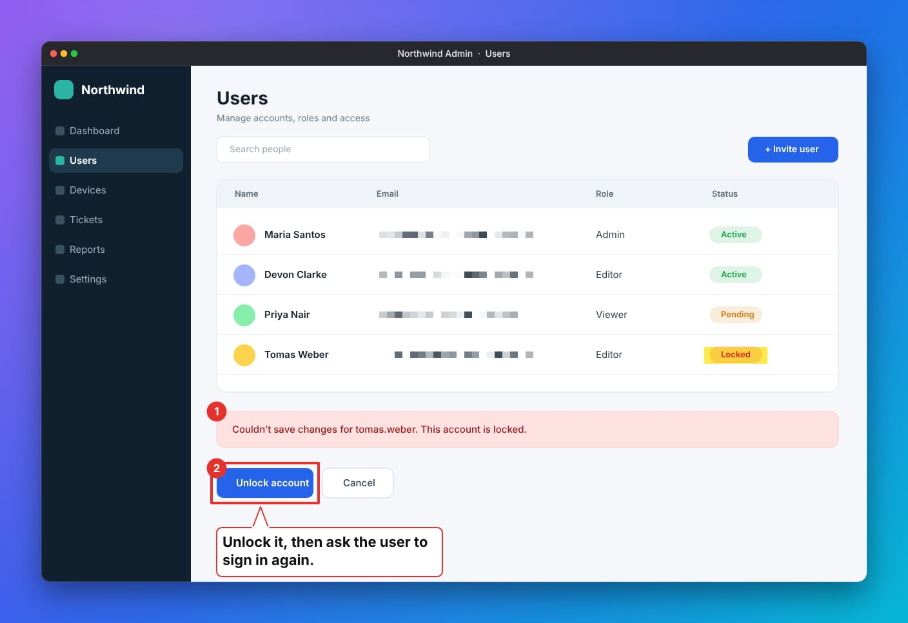
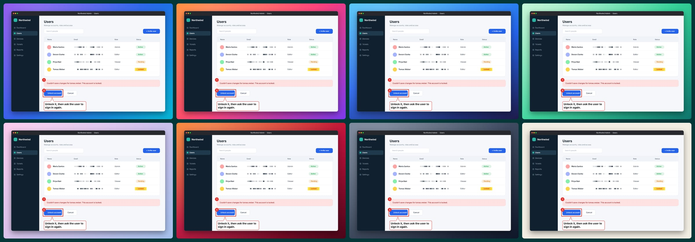
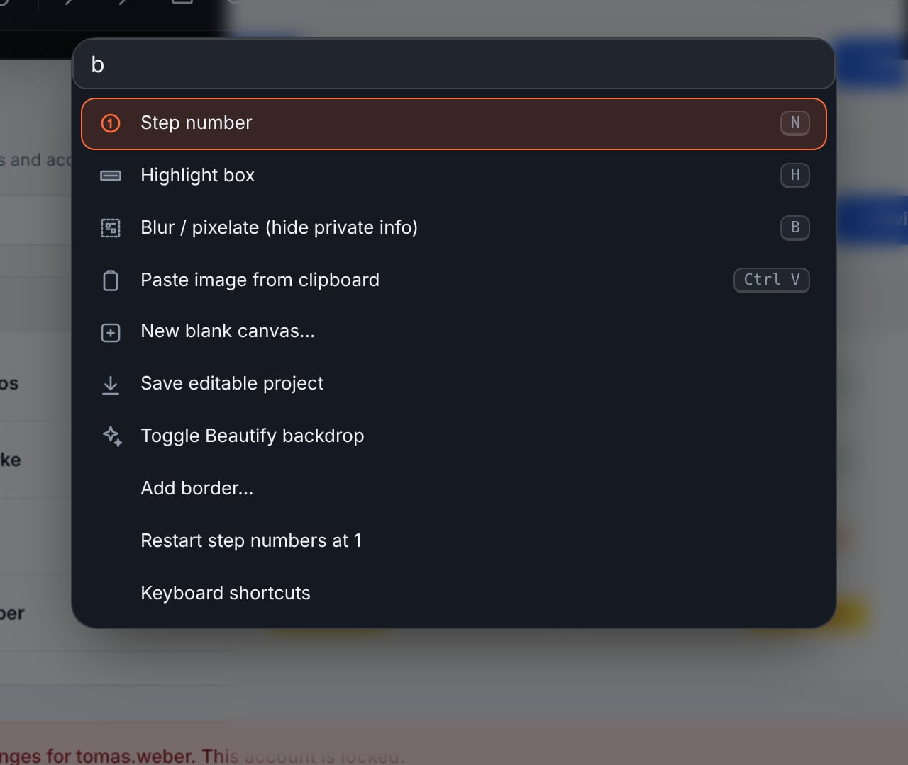
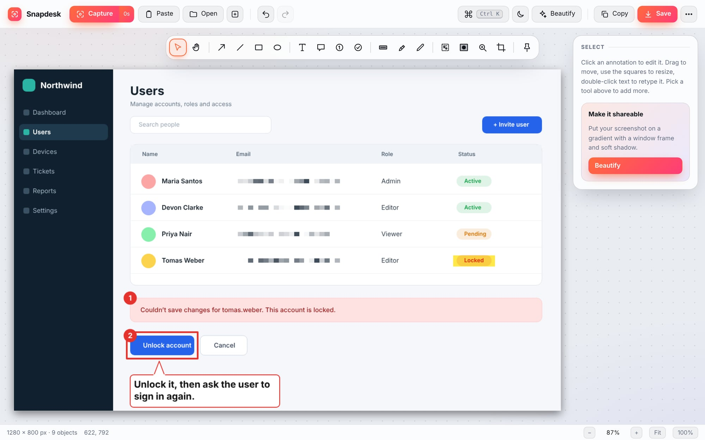

A screenshot is half of every ticket
On a help desk you take screenshots all day. The paid editors do this well, but a license isn’t free and I wasn’t going to pay for one out of pocket. The free tool I fell back on had three problems.
You can capture, but you can’t explain
A screenshot with no arrow or number makes the reader hunt for the problem. Annotation is the whole point.
Muted next to the real thing
Opened in other apps, the screenshots looked washed out compared with the screen. I wanted a tool I could trust not to change the pixels.
Screenshots leak
Emails, names and account details end up in a picture that gets pasted into a ticket. Hiding them needs to be quick, or it won’t happen.
Paste. Mark up. Share.
Get the shot
Press Win+Shift+S, drag a region, paste into Snapdesk. You can also capture a screen or window from inside the app, or drop in any image.
Mark it up
Fifteen tools: arrows, numbered steps, callouts, highlights, blur, spotlight and more. Every mark stays editable until you save.
Make it shareable
Copy the finished image straight into a ticket or chat, or run it through Beautify first for a presentation-ready version.

The editor with Beautify off. The screenshot inside it is the same made-up demo screen, which is why you see “Northwind” and an “Unlock account” button. In real use that spot holds your own screenshot. The tool bar floats above the canvas and the inspector only shows options for the tool in hand.
Built to work anywhere a locked-down PC does
It had to be free, work offline, and run on a work computer where I can’t install software. Those limits shaped the product the same way they shaped my Service Desk Workbench: if it’s one file, it runs anywhere that one does.
The calls I made, and what each one cost
Build from what a screenshot tool does, not from any product
I started from the job: capture, annotate, redact, share. I specified each tool by what it needs to do for a help desk ticket and designed the interface myself.
Trade-offIt won’t match every feature of a mature paid product. Scrolling capture and video are not here.
Pixels are sacred
An image you paste in and save without editing comes back identical, value for value. A test loads an image full of exact colors and compares every channel before and after. There is no auto-enhance, because it would change the colors.
Trade-offNo one-click “make it pop” filter, on purpose.
Recommend Windows’ own snip over in-browser capture
Capturing from a browser goes through a video pipeline that can shift colors. Pasting from Win+Shift+S is lossless. The in-app capture is there, but the interface says which route is better and why.
Trade-offOne extra keystroke for the most accurate result.
Annotations are objects, not paint
Each arrow, box and number is a shape you can select, move, resize, recolor, reorder and undo until the moment you export. An editable project file keeps the original and every mark.
Trade-offMuch more code than painting on pixels. Worth it, because people fix mistakes constantly.
Redaction destroys pixels, and says so
Blur and pixelate overwrite the image when it’s exported, so the hidden text can’t be recovered from the saved picture. Pixelate is the default, with a strength slider.
Trade-offA weak setting hides less. The project file still holds the original, so the app warns to keep it private.
Beautify happens at export
The backdrop, rounded corners, shadow and window bar are wrapped around the image when you copy or save. Your edits stay clean underneath, and it’s one toggle to turn off for a plain ticket screenshot. One function draws both the preview and the export, so what you see is what you get.
Trade-offMore rendering code, and ten backdrops to keep looking good.
Make it fun to use
A tool you use all day should feel good. A Ctrl+K command palette runs anything, step numbers pop in, capture flashes, and light and dark themes are first-class. All motion respects “reduce motion”.
Trade-offMore states to test, so each one has a test.
One file, no network, provably
The page’s security policy blocks every network request, and a test asserts there are none. Nothing is uploaded, and only your theme and Beautify settings are remembered. Never an image.
Trade-offNo cloud links or sync. That’s the point.
What I chose not to build
Saying no kept it honest. Each of these was a real option.
What it does

One floating rail of tools, grouped by job. Hover for the name and the keyboard shortcut.
Hide what’s private, fast
Drag a box and the emails are gone. Pixelate by default, blur when you prefer it, with a strength slider. It’s applied to the saved image, not just on screen.
- Spotlight dims everything except what matters
- Magnify zooms into a tiny detail without cropping

Beautify, with one toggle
Ten backdrops, adjustable padding and rounded corners, a soft shadow, and an optional Windows 11 or macOS title bar with your own title. Copy and Save include it automatically.
- Transparent and paper backdrops for documents
- Remembers your last look


The same demo screenshot, eight backdrops. Every one of these is a real export from the app.
Fast, and fun to drive
Ctrl+K opens every tool and action. Press a letter to switch tools, hold Shift for straight lines and perfect squares, and nudge with the arrow keys.
- Numbered steps count themselves
- Light and dark themes, both tuned by hand

Light when you want it
The same editor in light mode. It follows your system setting by default, and one click switches it.
- Starts with a friendly empty state and a sample screenshot to try

What I can measure so far
Where it went wrong, and what I changed
The More menu opened underneath the inspector panel. My browser test failed to click it, which is how I found it. The top bar now sits above the floating panels.
Blur’s internal color leaked into the shared color setting, so everything drawn after it came out black. I spotted it in a screenshot. Each tool now only reads its own settings.
A delayed “save this change” timer could fire mid-drag and store a half-drawn shape. It showed up in about one test run in three. Now the timer can’t fire while you’re drawing or typing, and a no-change step is never recorded. Ten clean runs in a row.
Placing text closed the editor immediately and removed the empty box. The order of two steps was backwards. Fixed, and covered by a test.
Ctrl+K didn’t work while the cursor was in a text field. It should work from anywhere, so it now does.
Use it for real, then decide what’s missing
A week of real tickets
Use it for every screenshot I take at work and keep a list of what I reach for and can’t find. That list, not my imagination, decides the next version.
Where it could go
Size presets for Jira, Teams and email. A short GIF recorder. A browser extension for scrolling capture. Each needs something a single file can’t do, so each is a deliberate step up in scope.
Built with Claude Code as an AI pair programmer, under my product direction. I specified the features and the feel, reviewed every build in a real browser, and nothing counted as done without a test.
See it work
Everything runs in your browser. Nothing is uploaded. Click Try a sample, drop an arrow and a numbered step on it, pixelate an email, then hit Beautify.